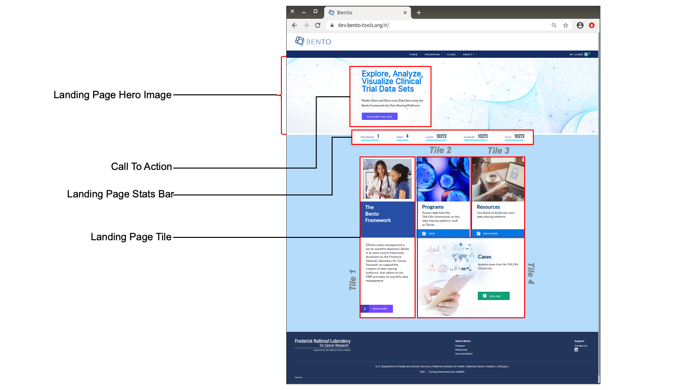

2. Landing Page¶
The Landing Page provides a visual and textual introduction to the overall mission of your data sharing platform, a concise summary of the volume and diversity of stored data and a bird’s eye view of what an end user can accomplish at your data sharing platform. A Bento Landing Page has several configurable components. See below for details.

Landing Page Elements. Displayed are the configurable components of a Bento Landing Page. These are: Landing Page Hero Image, Call To Action, Landing Page Tiles, Landing Page Stats Bar. The Call To Action feature consists of a title, a descriptive section and a text button. Each of the four Landing Page Tiles consist of an image, a title, a descriptive section and a text button.
2.1. Prerequisites¶
The files that specify the configuration parameters of the Bento Landing Page are stored in the GitHub
https://github.com/CBIIT/bento-frontend(representing your GitHub username asYOUR-USERNAME). Create a local clone of your fork into a local directory, represented in these instructions as$(src).Configuration Parameters for all Landing Page elements can be specified in the file:
$(src)/bento-frontend/blob/master/src/bento/landingData.jsAll images and icons that you use in your Bento instance should be accessible via a public url.
Please review the list of GraphQL queries to select query type(s) that return your data of interest.
2.2. Landing Page Hero Image¶
The Landing Page Hero Image is a visual representation of the mission of your data sharing platform.
2.2.1. Configuring the Landing Page Hero Image¶
Open the file
$(src)/bento-frontend/blob/master/src/bento/landingData.js.Under
landingPageDataSet the field
landingPageHero.imgwith the URL to the Landing Page Hero image of your choice.Set the field
landingPageHero.altwith the alt text to be associated with the Landing Page Hero image.
Example:
export const landingPageData = {
...
landingPageHero: {
alt: '<Your Alt Tag>',
img: '<URL for your Landing Page Hero Image>',
},
...
}
2.3. Call To Action¶
The Call To Action feature provides a concise summary of the all that an end user can accomplish at your data sharing platform.
2.4. Configuring the Call To Action Feature¶
Open the file
$(src)/bento-frontend/blob/master/src/bento/landingData.js.In
landingPageData:Set the field
callToActionTitleto the Call To Action Title.Set the field
callToActionDescriptionto the Call to Action Descriptive Text.Set the field
callToActionButtonTextto the label for the Call To Action button.Set the field
callToActionButtonLinkto the link to be embedded in the Call To Action button.
Example:
export const landingPageData = {
callToActionTitle: '<Your Call To Action Title>',
callToActionDescription: '<Your Call To Action Descriptive Text>',
callToActionButtonText: '<Your Call To Action Button Label>',
callToActionLink: '<Your Call To Action Embedded Link>',
...
}
2.5. Landing Page Tiles¶
The four Landing Page Tiles provide additional visual and textual description of the mission and capabilities of your data sharing platform (see figure above for tile numbering). Note that in this version of Bento, the number, position and dimensions of these tiles cannot be configured.
2.5.1. Configuring the Landing Page Tiles¶
Open the file
$(src)/bento-frontend/blob/master/src/bento/landingData.js.Under
landingPageData, for a tile,tile<i>:
Set the field
tile_i.titleTextto the Tile Title.Set the field
tile_i.descriptionTextto the Tile Description.Set the field
tile_i.imgto the URL for the tile image.Set the field
tile_i.altto the ALT tag for the tile image.Set the field
tile_i.callToActionTextto the Call To Action text.Set the field
tile_i.callToActionLinkto the Call To Action embedded link.
For example, to edit properties of tile3:
export const landingPageData = {
...
tile3: {
alt: '<ALT tag for tile>',
img: '<Link to image>',
titleText: '<Tile title>',
descriptionText: '<Tile description>',
callToActionText: '<Tile Link Label>',
callToActionLink: '<Tile Link>',
},
...
};
2.6. Landing Page Stats Bar¶
The Landing Page Stats Bar provides the end user with a high level view of the volume and diversity of your stored data, by providing the counts of up to five major data entity types. Bento allows a maximum of 5 statistics. If you add more than 5 statistics, only the top 5 will be displayed without any warning or error message.
2.6.1. Configuring the Landing Page Stats Bar¶
Open the file
$(src)/bento-frontend/blob/master/src/bento/landingData.js.Under
landingPageDatayou can add your statistic to landingPageStatsBar.Set the field
statTitleto the label to be displayed for your statistic.Set the field
statAPIto the GraphQL API query that returns your statistics of interest.Add the GraphQL query to
GET_LANDING_PAGE_DATA_QUERY.
Example:
export const landingPageData = {
...
landingPageStatsBar: [
{
statTitle: '<Your Statistic Label',
statAPI: '<Your GraphQL API query>',
},
...
]
}
export const GET_LANDING_PAGE_DATA_QUERY = gql`{
'<Your GraphQL API query>'
...
}
2.7. Suggested Best Practice¶
Dimensions of Landing Page Hero image: 1200x500 pixels
Dimensions of Tile 1, Tile 2 and Tile 3 images: 293x349 pixels
Dimensions of Tile 4 image: 600x 436 pixels
Image resolution >= 72 ppi and image format: PNG
The “Call To Action” title should be limited to a maximum of 60 characters.
The “Call to Action” description should be limited to a maximum of 150 characters.
The Tile title should be limited to a maximum of 60 characters.
The Title description should be limited to a maximum of 150 characters.
Alt tags should be short (maximum limit =125 characters). You may add multiple, comma-separated key words in the Alt tag.